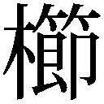
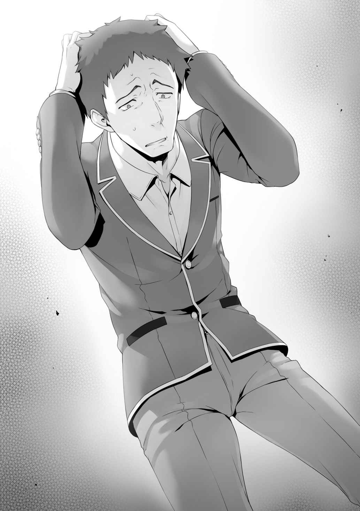

○善と悪
朝、オレが教室に入ると、生徒たちの視線が一斉に集まった。
だがすぐに散り散りになっていく。
そしてまた、どこからともなく視線を向けられる。そんな繰り返しが始まった。
オレを退学させる。
そんな動きが始まっていた事実。
昨日感じた違和感の正体は、これだったようだ。
オレが気づかないほど４人の演技が卓越しているわけではないだろう。
相手もグループを組んでいる以上、当然
そしてオレも余計な心配を４人にかけるわけにはいかない。
下手に漏らせば
自分で対処するしかない。
「おはよう綾小路くん」
「ああ、おはよう」
何も知らない様子の
「おっす」
どうやら
「言っておくけれど、偶然よ」
「聞いてない」
須藤は何となく誇らしげに鼻を鳴らし、自分の席に向かう。
恐らくこの件、須藤も絡んではいない。
オレに退学してほしいとは思っているかも知れないが、
「……ところで」
２人になったタイミングで、堀北は小声で声をかけてくる。
「なんだ」
「あなた、何かした？」
「単語が抜けてないか？ 何のことか説明してから聞いてくれ」
「私に関することで何かした？」
またも抽象的な聞き方だ。
「何を言いたいのか知らないが、何もしてない。おまえに構ってる暇はないからな」
「構っている暇はない？ どういうこと？」
「こっちの話だ気にしないでくれ」
もうすぐ授業が始まる。
行動を起こすのは午後に入ってからになりそうだな。
１
試験が明日に迫った金曜日のお昼。
私、堀北
そろそろ眠りにつこうかと思っていた私の下に届いた１通のメール。
差出人の名前を見て、心臓が飛び跳ねたのを覚えている。
兄さんからのメール。
そこにはたった１行だけ書かれていた。
『思い残すことは何もないのか』
問いかけるようなメッセージだけ。
私はそのメッセージを繰り返し読み、そして考えた。
迷っている自分に、何が出来るのだろうと。
だけど、これは巡ってきた
この機会を逃せば……次に兄さんの声を聞けるのは卒業式になる。
『お話しできませんか』
意を決して、そうメッセージを書く。
後は送信するだけなのに、指先が重く簡単に押せなかった。
「ふう……」
呼吸を整え送信。あとは兄さんからの連絡を待つだけ。
本当に返ってくるだろうか？ そんな不安が
兄さんからの返事は、電話という形で戻ってきた。
むしろ私は
これが電話で良かった。震えだす私の手を見られないで済んだから。
「……私です。鈴音です」
「話がしたいと言ったな」
「はい……」
「話の内容はなんだ」
「……あの、どうして私にあのようなメッセージを……」
「今それは重要なことか？ おまえが電話で話したかったことはそんなことか？」
「い、いえ違います」
電話を切られそうな気配を感じ、私は慌てて否定して引き止める。
「もし兄さんさえ良ければ……直接お会いできないでしょうか」
「直接だと？」
「は、はい」
「この学校に入学し、そして学校を
厳しい現実。こうして連絡を
それほどまでに、私と兄さんとの距離は遠い。
本当はたくさん兄さんと話がしたい。
これまでのこと、これからのこと。
だけど……兄さんはそんなことを私に求めたりしない。
「直接、お伺いしたいことなんです」
沈黙する兄さん。私はゆっくりと言葉を続ける。
「それを最後に……もう二度と兄さんにかかわることを
それが私に差し出すことができる、唯一の
「なるほど、いいだろう」
───それが昨日の夜のやり取り。
そして私は今、兄さんの下に向かっている。
人目を避けるため、私たちの待ち合わせは誰も来ないであろう特別棟。
目的地につくと、既に兄さんはその場所にいた。
２
「お待たせしました……」
静かに
ずっと追いかけ続けている終着点。
「こうしておまえと２人きりで話すのは、いつ以来だろうな」
「……入学直後を入れなければ、３年ぶりくらいになります」
「そうだな。それくらいになるか」
学は中学１年生だった時の鈴音を思い返す。
自らが高度育成高等学校に進むことを決めた時、学は鈴音を突き放した。
妹が同じ道を
だが、現実問題として、鈴音は学の目の前に立っている。
「俺に話があると言っていたな。聞こう」
ここで兄との仲直りをするためだとでも口にすれば、そこで話し合いは終了する。
以前の
「追加試験に関してです。兄さんも、１年生のことはご
「ああ。強制的に１人退学者を出す試験だったな」
「はい」
「それで？」
鈴音に話を促す。
ここまで比較的スラスラと話していた鈴音が言い
「俺個人のプライベートポイントは、合宿でほとんど使用してしまっている。もしもあてにしているのなら時間の無駄だ」
「違います。そのような形の
迷いを断ち切るように、鈴音は決意を固める。
「今日兄さんに話がしたかったこと、それは……私に───勇気をください」
鈴音は、そう言った。そしてこう続ける。
「私はこの試験を正面から受け止めたい。他の人はグループを作って、票をコントロールしようとしています。自分が退学しないようにするために。でも、それはこの先、いつか必ず後悔することになります。だから私は───立ち向かいたいんです」
その言葉と瞳を目の前で受け入れ、学は静かに見つめ返す。
昨日
妹がやろうとしていること。
それはけして楽な道ではない。
だが、他の誰にもできないことを、自らの手でやろうとしていた。
その覚悟を決めるため、意を決し兄に会いに来た。
「時間は？」
「この後の予定は入れていませんが……」
「そうか」
思いもよらない確認を受け、やや面食らう鈴音。
「おまえの話を具体的に聞く前に、少し聞きたい。この学校はどうだ」
「え？」
「楽しいか？」
「あ、えっと……は、はい」
そんなことを聞かれると思っていなかった鈴音は露骨に
「す、すみません。その、あの……」
答えられずにいるものの、
「楽しい……かどうかは、正直わかりません。ただ、退屈ではないです」
「そうか」
学の質問の意図が、
思えば自身の兄と普通の会話をしたのなど、
「おまえの欠点は１つ、克服されたようだな」
「私の欠点……ですか？」
「そうだ。おまえは自分のことに集中するあまり、周囲が見えていなかった。その視野が広がったことで、退屈な日々からは抜け出しつつあるということだ」
「なんだか、兄さんらしくない……ですね」
鈴音の知る学の姿は、真面目
自分を高めることを
学校を楽しむモノだと認識してるはずがない、そう考えていた。
「おまえは俺を数値しか見ていなかった。テストで高い点数を取ることだけにこだわっていたからな」
「それは───私にとって兄さんは、永遠の目標だからです」
これまで鈴音は何度も、兄が目標であると口にしてきた。
そしてそれを聞くたびに、学は険しい顔をする。
「目標、か」
「……わかっています。私が兄さんに追いつくなんて絶対に無理なこと。ですが、それでも限りなく近づけるように努力することは悪いことではないはずです」
自らの
学は鈴音の
「
「……どう見える、ですか」
「思ったことを素直に言えばいい」
「気に入らない同級生です。兄さんに認められるほどの実力を持っていながら、それを使おうとしない姿勢が好きではありません。ですが、いつか彼に追いつき追い抜きたい存在だとは思っています」
「残念だが、おまえは綾小路には追いつけない」
「っ……」
「だが、追いつく必要は全くない。おまえはおまえらしく成長すればいい」
「私らしく……」
学は少しだけ妹との距離を詰める。
鈴音があと少し、自分で学との距離を詰めれば手が届く距離に変わる。
だが、
「怖いか？」
「……怖い、です……」
小さな頃から、この距離を詰められないでいた鈴音。
この
「距離を詰めるためには、もう一歩、おまえは前に進まなければならない」
「どうすれば……どうすれば、私はこの距離を縮められるのでしょうか……」
「今から、未熟なおまえにその解答を授ける。だから話せ、おまえがこれから自分のクラスに何を問いかけるつもりなのかを」
鈴音は
３
投票前日の放課後。
明日にはこのクラスから退学者が決定し、席を空けることになる。
誰もが不安に感じながら、それでも心の中で自分は大丈夫だと信じ
そう。
『
その方向で半数の生徒はまとまっている。
クラスメイトの多くは、今オレに一定の罪悪感を抱いているだろう。
それでも自分が助かるのなら、それは安い罪悪感だ。
時間が
１年も経てばそんな生徒もいたな、というくらいになっている。
それに対し、オレが
情に 
友人から信頼され秘密事を相談する田からの頼み事を、
もし退学を避けることだけを目的とした行動だったのなら、
あの２人に、退けるだけの力はなかっただろうに。
まぁ裏で
ともかく、落とされそうになった以上、こちらも誰かを落とすために動くしかない。
だが今回、事を起こすのはオレじゃない。
オレはただ
それを
隣人の少女の横顔は、オレが想定していたよりも
まるで魔法の砂にでも触れてきたように、異なるオーラを身にまとっていた。
「それではホームルームを終わる。明日は土曜日だが試験だ、寝坊するなよ」
そんな
誰もがこれから帰り
静寂に包まれた瞬間。
さあ───動け
隣人が椅子を引いて、立ち上がる。
「少し時間を
声を張った堀北が、そう言って教室の生徒全員に呼びかけた。
何事かと、当然注目が集まる。
「皆、申し訳ないけれど、
茶柱もまた、堀北の様子が気になったのか一度足を止める。
「どうしたのかな、堀北さん」
こんな時、誰よりも早く
クラスの変化に対し、誰よりも敏感だからだ。
「明日の特別試験に関して、どうしても話しておくことがあるの」
「明日の試験に関して？」
「な、なんだよそれー。俺これから
「そ……そうだよな」
そう言って山内たちが、時間がないことをアピールする。
「
視線が山内に向けられると、慌てて視線を
「それは……ジタバタしてもどうにもならないから、覚悟を決めたって言うか」
「そう。立派な心掛けね。だけど悪いわね、全員があなたのように立派なわけじゃない。この話は全員に残ってもらわなければ意味がないことなの。協力してもらえる？」
「一体何の話なんだよー」
「明日の試験、そして退学者について。大事な話がしたいの」
堀北は歩き出し
全員の顔がしっかりと見渡せる位置に立ちたかったのだろう。
「退学者の話って……え、何だよそれー」
明らかにいつもより早口で話し始める
「この数日間、私なりに色々と考えていた。誰が残るべきで、誰が退学すべきなのか。どうやってそれを導き出すべきなのか。そして今日、ハッキリとその答えを出すことが出来た。だからこの場で伝えさせてもらう」
「ちょっと待って
それを止めたのは山内ではなく
「このクラスに退学すべき人なんて、一人もいないよ」
「そうかしら？ いるかも知れないわよ？」
「そ、そんなこと……」
「私はこの試験が知らされた時から、大きな疑問を抱えていた。クラス内で評価し、その結果で退学者を出すのに、クラス内で話し合う時間すら設けられない。これじゃあ、グループを作って、票のコントロールをする戦いになってしまう。その結果、本来クラスに残るべき優秀な生徒が退学にさせられてしまう危険性もある。こんなもの、試験とは呼べないわ」
真っ先に感心したのは、
「君に何があったか知らないが、まるで別人のようだねぇ。実に的を射た話だよ」
拍手しながら、高円寺は更に続ける。
「聞かせてくれないか。何をどうしたいのか」
「本来なら、全員で話し合いをして退学者を絞り込むべき。でも、それが現実的に難しいことは分かっているわ。だから───私から退学すべき人を名指しさせてもらう」
「ちょ、ちょっと待って堀北さん」
「悪いけど、今は私に話をさせて。名指しする理由は、後からきちんと説明するから」
時間を
「ダメだよ。皆を混乱させるような
それでも平田は食い下がった。
平田には平田の
「話をする権利くらいあるだろ。その後で反対しろよ」
「レッドヘアーくんの言う通りさ。私も有意義な放課後の時間を割くんだ、君が阻害する方がタイムロスだねぇ」
この話し合いに興味を持っている高円寺も援護射撃する。
「で、でも……」
その
「私は今回の特別試験……山内
クラスメイトが注目する中、堀北はハッキリと生徒の名前を口にした。
これまで、陰口で何人もの生徒が
「な、なんで俺なんだよ堀北ぁ!?」
いの一番に反応するのは当然、他でもない
堀北の暴挙を許せば、山内は批判票のターゲットにされてしまう。必死になる。
「明確に理由はあるわ。まずこの１年間、あなたのクラス内での
「そ、そんなことねえし！ テストだってずっと
「今回は抜かれたわ」
「それは、だから、今回だけだろ～！」
「百歩譲って学力はまだ
「それは
必死に山内が抵抗するのは当然だ。
ここでやり玉にあげられたなら、生徒は誰だって必死になる。
「確かに似たような戦力の生徒は一定数固まっている。あなたの言い分も正しいわ」
「そ、そうだろ。マジ名指しとか勘弁してくれよぉ～……」
「けれど、横並びの彼らと比べても、あなたはやはり半歩劣るのよ。これまでの授業態度や遅刻欠席の有無、得意不得意を踏まえクラスの重要度で判断すれば最下位になる。次点で並んで
「お、俺も退学候補かよ！」
慌てたのは須藤だ。
「あなたは確かに、ここ最近は学力も精神面も向上してきた。けれど、それまでにクラスに対して負担をかけた回数の多さが取り消せるわけじゃない。そうでしょ？」
「……ああ、そうだな」
事実を突きつけられ、須藤はそれを素直に受け止める。
池も同じように受け止めたのか、表情は重い。
「マジ何勝手言ってんだよ！ 腹立つよな！ 寛治、健！」
同じように退学候補の
「それにさ、俺なんて
「高円寺くんは行動に関しては大きく改めるべきことがあるのも事実よ。だけど今回の話し合いの意味を理解している。能力値で言えばあなたとは比べるまでもなく雲泥の差よ。少なくとも今回の試験で退学になるべき生徒じゃない」
高円寺は満足げに不敵な笑みを浮かべ、腕を組んだ。
「納得いかねえって！ なんかもう、納得いかねー！」
「それなら、その
騒ぎ立てる
「け、決定的な話って？」
その異様なオーラに、山内が一瞬たじろぐ。
「あなたには今回の試験、誰にも話していない後ろめたいことがあるはずよ。違う？」
強気で語る堀北に
「後ろめたいことなんてないって……」
「自分の口で話す気がないのなら、私が言ってあげる。あなたは
「っ!?」
ざわ、と教室がどよめく。
票操作は半数が知ることとは言え、主犯が山内であることは知らなかったはずだ。
「綾小路くんを、退学させようとしていた……？」
綾小路グループの他、驚いた中の１人に
常に中立でクラスに寄り添っている平田に、今回の話が行くわけがない。
「ええ。
視線が合わずとも、身に覚えがあれば
それだけで、平田も半数の生徒が山内のグループだったことを悟る。
「だから……皆、想像以上に落ち着いていたってことなんだね……」
「小さなグループから始まった計画は、確実に広がっていった。過半数、
「あ、あれは俺じゃねえし！」
違うと否定する山内だが、弁明の言葉は続かない。
「じゃあ誰？」
「し、知らねえよ！ ただ、その……綾小路に批判票を入れろって言われたんだよ！」
苦し紛れの
「知らないのなら教えて。誰に綾小路くんに批判票を入れるように言われたの？」
「それは……だから……」
「あなたも誰かから聞いたことは事実なんでしょう？ それがわからないはずないわよね」
頭を抱えそうになった山内が周囲を見渡す。
「……
そして身近な親友へと白羽の矢を立てる。
「いやっ、え？ 俺は違うって！」
当然
「そうなの？ 池くん」
「いやいやいや、違う違う。俺は……」
そこで言葉に詰まる池。
それはそうだろう。相談を持ち掛けられた相手は
下手に売る
「答えられないと言うことは、
「違う、違う！ だから、えっと……。その、俺は
今度は池からの矢が田に向かう。
当然、田としてもこの状況を素直に受け入れるはずがない。
そもそも批判の対象となることを誰よりも嫌っている。
「まさか、あなたが首謀者なの？ 田さん」
あくまで
今回のように特定の誰かが狙われている場合、仮に首謀者が割れていなかったとしても問題はない。こうして一人一人に突き付けて行けば、やがて真実に辿りついていくからだ。
「私は……その……ある人に、助けてほしいって頼まれて……断り切れなくて……」
「ある人、とは誰のことなのかしら？」
結局、助かるために放った矢は、山内の下に返ってくる。
だが
「そ、そうだ！ 俺、桔ちゃんに誘われたんだよ！ 綾小路退学にさせようって！」
１つの
「わ……私!?」
「皆だって桔ちゃんから聞かされたんだよな？ な？ な？」
確かに仲介、橋渡しの役目を任されたのは田だ。
だがクラスメイトの多くは知っている。
田桔は友達の為に動く生徒であり、誰かを陥れるような子ではないと。
積み上げてきた信頼という経験値の差が出る。
「そんな、ひどいよ山内くん……私……山内くんが助けてって言うから、本当は綾小路くんのこと見捨てたくなかったのに……だから、一生懸命頑張ったのに……」
机にうつ伏せになり、苦しみの声をあげる田。
それだけでクラスメイト達にも見えただろう。山内が田に頼み込み、助けを
山内の状況はどんどんと悪化の
一番最悪の事態は、退学になってしまうことだ。
「……
顔を隠す田に対し
「あなたのやったことも大きな間違いよ」
強い口調で、堀北は田を
「このクラスの中で、あなたは
「わ、私、そんなことない、ただ
「
責める堀北の言葉に、田は泣きながら立ち上がった。
「私そこまで考えてなかった！ ただ、ただ困ってる山内くんが放っておけなくて……苦しくて……何とかしてあげたくて……！」
「いいえ、あなたには見えていた。こうなると分かっていて問題を放置したのよ」
「っ……」
あまりに責め立てる堀北に、田が
この場で強く言い返したいと思っても、田にはそれが出来ない。
天使の仮面を、この場で取り去ることなど不可能だからだ。
それを堀北が分かっていないはずがない。
「今回の件に関してはあなたの判断ミス。もっと早い段階で手を打つべきだった」
「そんな、私には、どうすることも……」
「このことを反省材料にして、今後クラスの為になる行動を心がけて」
田からの言い訳に聞く耳を持たず、堀北はそう言って
「とは言え元凶が山内くんであることは間違いのない事実のようね」
一時田に向いた矛が再び山内をロックオンする。
「ま、待てって堀北。俺は違うんだって……」
「いやいや、なかなかに興味深い話だよ。しかし誰かを落とそうとする流れ自体は、
最初から最後まで、完全な中立である
それは全て、堀北のための発言へと変わる。
「そうね。グループを組み誰かを落とそうとする
「ほう？」
「山内くん。あなたは自分を守るためだけに
「ま、待てって！ だから俺じゃないんだって！」
「見苦しいよ。既にこの教室の誰もが、君の仕業だと信じてやまないんだ。さあ聞かせてもらおうか。
ええ、と
「彼は、
白日の下に
「それは気になる話だねぇ。Ａクラスの生徒と繋がっているとは、穏やかじゃない」
ここまで
高円寺もまた、退学の対象であることに変わりがない以上、堀北に乗っかり危険を回避する狙いがあるのだろう。不要な生徒を
もし今回の試験で山内が坂柳と組まず特定の誰かを狙わなかったとしても、クラスで一番不要な生徒の一人だったことに変わりはない。結局は似たような流れになっていた。
だが、坂柳の誘いに乗ってくれたお陰で、山内を攻略するための手順はかなり省略することが出来たと言えるだろう。
「おい
「で、でたらめだ！ どこにそんな証拠があるってんだよ！」
「なら今すぐ携帯を見せてもらえるかしら。坂柳さんの連絡先が登録されているはず」
「それは……友達なんだから別におかしなことじゃないって！」
本当に友人関係であるなら、不思議なことではない。
しかし最近、露骨に坂柳が山内に接触していたことは池たちの記憶にも新しい。
堀北もそれを呼び起こさせるために、今の言葉をぶつけたのだろう。
「おまえ、マジで坂柳ちゃんとつながってんの？」
一番の友人である池からの、軽蔑するかのような言葉。
「だ、だからさ……っていうかなんで俺がＡクラスと組むんだよ！ 仲間を裏切るわけないだろ！ 全く覚えねーよ！ もう勘弁してくれよぉ……！」
頭を抱え、被害者を装う山内。
「いいえ。あなたはクラスの生徒たちをまとめ上げ、綾小路くんをターゲットにするよう彼女から指示を受けていたはずよ。彼女なら、あなたよりもよっぽど
「い、いやいやいや！」
「それ以外にも、山内くんが喜んで協力する話もあったかもしれないわね。たとえば、彼女から交際の誘いでもあった、とか」
「うぐっ！」
図星。隠したかった事実を指摘され、山内に新しい
この部分は完全な推理だろう。だが、態度を見るにその推理は的中している。

「そんな下らない理由の為に、あなたよりも優れた生徒を退学にすることは出来ない。これがあなたを退学者として推す最たる理由よ」
「誰だってクラスから仲間が欠けるのは嫌よ。けれど、真っ先に誰よりもクラスメイトを裏切って敵と
「そ、それは……」
山内は必死に頭を回転させる。
今の状況を好転させるために。
「もし、もし今の話が本当だとしても……なんで俺だけが責められるんだよ。他クラスだろうと、自分を守ろうとする
「なるほど。自分の身を守って何が悪い、そう言いたいのね」
苦しい言い訳だが、その部分を山内は
「確かに自分を守ることは大切よ。けれど、自分を守るために仲間を陥れ、あまつさえ敵に魂を売るような生徒を、やはり私は評価しない」
どれだけ山内が抵抗しようとも堀北には通じない。
「あ、
「違うわ。客観的に、冷静に判断した結果よ。綾小路くんと山内くんのスタートラインは同じ。そして同じスタートラインから見たとき、クラス内への
「異議はないねえ。
「待てって！ 俺は裏切ってないんだよ！ 命に懸けて！」
もはや最後の手段とばかりに、命に懸けて
それがどこまでクラスメイトに届いたかは微妙なところだ。
「そもそもさ、じゃあなんで
「どういうことかしら」
「もし、俺が本当に
恐らく、
「その答えは、彼が良くも悪くも目立たない人だからじゃないかしら。優秀な生徒を退学させたいと思っても簡単にはいかない。だから適当に、影の薄い彼を選んだ。恐らく坂柳さんにとって大切だったのは、Ｃクラスの誰を退学にさせるかじゃなく、自分の手駒として動いてくれるスパイが欲しかったから」
「私の話が気に入らない人もいるでしょう。なら、私の名前を書きたい人は書けばいい。山内くんの名前を書きたい人も、綾小路くんの名前を書きたい人も。あるいはそれ以外の人でも。けれど、私は私の意見を皆に伝えるべきだと思った。だからこうして話をしている。それを良く踏まえて判断して」
堀北の放った、捨て身覚悟の戦い。
これは効いただろう。
だが、ここで
「待ってくれよ
その表情は暗い。常に堀北の指示に従う須藤からの必死の抵抗。
「俺は反対だ、春樹の退学なんてよ」
「あなたの友達だものね。大切に思う気持ちはよくわかるわ」
だがその須藤からの山内への援護など堀北は既に分かりきっている。
しかし、須藤も簡単には引き下がれない。
「友達だから
「だったら、何もしていない綾小路くんが退学になる必要性だってないわ」
「そ、それは───」
「今話しているのは、そういう次元の話じゃないのよ
クラスメイト全員に嫌われる覚悟で臨む戦い。
「誰かを
「っ……」
須藤が黙り込む。
だが、そのためには誰かを退学にさせなければならない。
グループを組み、票をコントロールする。そんな
試験前日までクラスメイトは各自好き勝手に行動してきた。あいつを退学にするべき、あの人は退学になっても仕方ない。そんな負の思考で埋め尽くされていた。
だからこそ身に染みて理解する。ただ自分が助かりたいだけで、クラスのためになど行動できていないことを実感する。試験が告知された当日に、今回のように
「悪ぃ
正直に言って、須藤の成長ぶりには驚かされる。まだまだ挑発に乗りやすい、キレやすい体質は残っているが、少しずつ視野が広がって来ている。
堀北と比較的近い位置にいるオレと親友の山内を
「決まったようだねぇ」
ジャッジを下そうとする
「待て、待てよ、待てよ！」
山内が叫び、その判定を止める。
「俺に
「私の考えは決まった。あなた以上に批判票に
「おまえはそうでもなぁ！ もう皆と約束してんだよ！
「……私、取り消す……」
「あ……？」
俯いていた
「私が間違ってた……。山内くんを助けたいからって、何も見えてなかった。皆に協力するようにお願いして回ったこと、撤回する……」
田もこの場で自らの評価を下げないために、堀北側に回るしかない。
「待てよ。なんだよそれ！ 約束破るなんてひどいじゃんかよ!!」
「
もはや、完全に山内は一人になった。
自らに多くの矛が向くことを、誰よりも肌で感じ取ったはずだ。
「あなたはこのクラスで一番実力が不足している。そして、仲間を裏切る人」
淡々と、ただ静かに述べる。
「以上が、私の見解よ」
そう言って
もはや堀北に対抗できる存在は現れないと思われた。
「最後に、ここにいる全員の意見を聞かせてもらえるかしら。どう思ったのかを」
だが───。
「待って欲しい堀北さん」
「……何かしら」
挙手し、立ち上がった一人の男子生徒。
この場で唯一、堀北の計算外があるとすれば、この
「話の腰を折らないように聞かせてもらったけれど、僕はこんな形でのやり方、投票を誘導することには反対だ。仲間同士で蹴落としあうなんて、間違ってる」
答えを出せない平田の苦しみの抵抗。
「それ以外に方法はないわ。この試験には抜け穴は存在しない。必ずクラスの誰かが
「受け入れられるはずないじゃないか。僕は……僕は誰にも欠けて欲しくないんだ。望んだ退学ならともかく、山内くんにしろ
「望む退学じゃない？ 望む退学なんてどこにもないわ。そうね、だったらあえて無駄な質問を投げかける。このクラスの中で退学しても良いと思っている生徒は挙手してもらえる？ それで出て来るようならいがみ合う必要はないもの。全員一致でその人に
誰一人手を挙げる生徒はいない。そんな生徒が存在するのなら、既に立候補している。
「これで分かったかしら」
「ダメだ。僕は、こんな最低な話を認めさせるわけにはいかないんだ」
完璧な優等生。文武両道で、善人。
そんな平田洋介の弱点が
それは取捨選択を迫られる状況において、圧倒的に何もできないこと。
「あなたがどう思おうと、私は私の信じた方法で戦う。今この場で、決を採らせて」
「そんな挙手に意味なんてないよ。当日誰が誰に投票するかの保証にはならないんだ」
「そんなことはないわ。クラスメイトの方向性を定める意味でも重要なことよ」
「ダメだ。全員の……全員が、誰を退学にさせようとしているか、そんなこと……！」
誰が誰を嫌っているかということが、
「じゃあ聞かせてもらうわ」
平田を無視して、
もはや誰にも堀北は止められない。
そう、判断しそうになった時だった。
「堀北さん！」
ガン！と無機質な音が教室に響き渡った。
誰がその光景を一度でも想像できただろうか。
平田の蹴り飛ばした机が、無情にも前方に吹き飛び転がる。
「ちょ、え、ひ、平田くん？」
女子から信じられないと言った声が聞こえた。
オレだってそうだ。
たまたま勢い余って、足が机に当たった、と思いたくなるような出来事。
それは
あまりに意外過ぎる男の、信じがたい行動。
「
声のトーンすら低く、相手を怖がらせ退けようとしている。
「……何を止めろと言うの？」
「決を採るのを、止めろって言ってるんだ」
「あなたにそんな権利ないわ……」
相手を威圧する言葉に堀北も、
それだけの迫力が今の平田にはあった。
「この話し合いは間違ってる」
「この話し合いすら違うというなら、一体何が正解だと言うの？ あなたにも分からないから、何もせず今日まで過ごしてきたんでしょう？」
「……だから、なんだ」
「……だからそれは問題だと言っているのよ。正当な評価じゃない」
「黙れ……」
「いいえ、黙らないわ。私は───」
「堀北……ちょっと黙れよ」
言い返してくる
今までで一番冷たく重たい言葉に、堀北の言葉が止まった。
空気が凍り付くとは、このことを言うのだろう。
「いいか、全員聞け」
平田は別人のように口調を変え、クラスメイトに指示を飛ばす。
「今の話が本当か
「……嘘だ！ 嘘なんだよ平田！ 俺は被害者だ！」
ここぞとばかりに、圧されるばかりだった
「被害者？」
「うっ……」
平田の深く心をえぐる目が、山内を射抜く。
「これだけの話が出てるんだ。君が無関係なわけないだろ」
「それは、だから……」
「仲間を陥れることに何とも思わない君らのやり方には、吐き気を覚える」
山内だけではなく、クラスメイトに対する怒り。
「これは試験よ、避けては通れないこと」
「だからって票を操作するのは間違ってる」
「試験は明日。このまま無策で挑むということは、山内くんの裏切りを黙認するも同然」
「無策の何がいけないんだ。僕らにクラスメイトを
「あなたは何を言っているの……？ それが今求められている特別試験なのよ？ 現に、多くの生徒はそれを望んでいる」
だが平田は認めようとしない。
「───君の存在がいけないんじゃないか？」
低く重たい声が、教室の中に響く。
「確かに今回の試験は、あまりに非情で無情なものだ。僕はずっと認められないでいる。だけどそれでもどうにか黙認できるとしたら、それは自然な投票という形でしかない。こんな風に誘導し、落としあうためのものじゃけしてないんだ」
「
「そう。それも最悪な
「同じよ。何も変わらないわ。偽善をかざすならその行為すら
誰も２人のやり取りに口を挟めないでいた。
今の
「それにここで挙手を取らずとも、私の考えは伝え終えた。あなたの望んでいた自然な形は既に跡形もなくなくなっているのよ？」
「そうだね……もう
ひと呼吸置き、そして平田は続ける。
少しだけ冷静さを取り戻してはいたが、冷淡な様子は変わらなかった。
「だから僕は明日、堀北さんの名前を書くことにするよ。望まない形をこのクラスに作り出した君を、僕は容認しない」
平田自身も、矛盾を多く抱えていることは百も承知だ。それでもクラス全員と仲良く、そして平和を何より重んじてきたからこそ、苦しんでいる。
「ええ。好きにして」
平田に賛同するのなら受けて立つ、と堀北は不満を
その２人の衝突を最後まで見守っていた
「いいか堀北」
「はい」
茶柱に場所を譲り、自分は席に戻る。
授業は既に終わっていて、教師が出る幕はどこにもないはず。
だが茶柱は、あえて生徒たちの領域に踏み込んできた。
「おまえたちはこの試験を理不尽だと言い、学校をののしるだろう。だがな、社会に出れば誰かを切り捨てなければならない事態というものは必ず訪れる。その時はトップや管理職の者がその
社会で足を引っ張る人間は、当然仲間を守るために切られる。
その一連の中にも、今日行われてきた裏取引や
この特別試験には確かに、人を成長させるための要素は含まれているといえる。だが、身も心も未熟な子供の多い生徒にそのジャッジを強いるのは、けして優しいことじゃない。この試験の影響で心を壊す生徒が出るかもしれない。
「今日の話し合いに私は一切口を挟むつもりはない。全員の発言に価値があったと思っている。そのうえでよく考えて投票することだ」
話し合いを全て聞き終えた茶柱は、そう言い残し教室を後にした。
オレか
明日の投票では誰が誰を書くのかは一切不明。つまり直前も直前で答えが変わることもある。それを
これはそういう特別試験だ。
４
放課後になると、すぐに
「これから時間、大丈夫よね？」
「ん？ ああ」
本当は少し
平田は感情を表に見せず、一人静かに席を立った。
話が広がった以上、グループを無視するのも得策じゃないだろう。
「カフェ行こ」
そんな誘いを受け、オレたちは堂々グループを作って教室を後にした。
廊下に出ても、その姿勢を誰一人崩そうとはしなかった。
「いいのか。下手したら山内のグループに狙われることになる」
「狙ってくるなら上等でしょ。私たちのグループから退学者なんて絶対出させない」
いつもと違い、波瑠加はやや怒った姿勢を崩さなかった。
「同意見だ。
そんな波瑠加に同意する
「俺たちに情報が一切入ってこないのも、変な話だとは思ってたんだ。このグループ内に狙う相手がいるんだから当然と言えば当然だったんだな」
どれだけ探りを入れるように行動してもターゲットの影すら見えてこない。
その理由を知って啓誠は納得した様子だった。
カフェに着いて各自飲み物を用意し終えるなり、波瑠加が切り出した。
「
「異論はないがそれ以外の２票はどうする」
「まだ山内くんの味方につく人たちから選んだらいいだけじゃない」
「
「だけど友達として、情けの
その波瑠加の読みは当たっているだろう。
裏切ったと言っても、山内は保身のために行動しただけ。
見方を変えれば坂柳に利用されただけとも取れる。同情の余地がないわけじゃない。
まぁ、山内にヘイトが向くように仕向けたのは堀北……いや、オレなわけだが。
山内が
この事実を堀北兄に伝え、そして兄から妹へと伝えてもらう。
万が一動けなければ、オレが直接堀北と同じことをするまでだったが。
「実際のところ
男子から見えている批判票だけでも７票。
「女子は？」
「
「……
「どうして？」
「なん、となくで理由はないんだけど……」
「女の
「あてにはならないな」
それを数に入れようとしない
「そんなことないって。案外当たってると思うけど。ほかでもない愛里が言うならさ」
「どういうことだ？ ほかでもないって。佐藤はともかく軽井沢は分からないだろ」
よく分からないと首を
「いいからいいから。とにかくその２人は除外してもいいってことで」
「雑だな……」
「けどよ、３人除外してもその他多数は分からないってことだよな」
「まーね。でも、山内くんを好きじゃない女子は多いし。きよぽんの名前を書く約束を
「心理的に見てもそうだな。助かりたい連中にしてみれば、退学濃厚な生徒をとりあえず列挙して書いておけば、どっちに転んでも安全だ。清隆、山内の一騎打ちになると見てるだろうし。まぁあとは票を散らしてくるだろうな」
話を聞き啓誠が根拠を示した。
「絶対に大丈夫だよ、清隆くんは」
「ああ、ありがとう」
愛里の中には、残り１枠の批判票が自分に向くんじゃないかと不安な部分もあるはず。
だがそれを見せずオレに対して
「にしても、一番落ち着いてるよね、きよぽん」
「オレに出来ることが何もないだけで、内心は不安でいっぱいだ」
「心配するな。堀北のお陰で風向きは悪くない、それどころか救われた形だ」
堀北からの提言がなければ、何も知らずに多くの生徒が当日を迎えていた。
そして深く考えず、自分が助かりたい一身でオレの名前を記入していた。
そんなビジョンを想像するのは簡単だ。
「でも……
ふと、そんな疑問が
「私たちのグループは、
「確かにそうだな……。堀北は特にグループを作る素振りも見せてない」
山内もその辺に今頃怒りを感じているだろう。まとめあげたグループ内の誰かが裏切り、堀北に情報を流したと思っているはずだ。
先ほどの場ではそのことに気がついたり指摘する余裕はなかっただろうが。
「誰かは分かんないけど、きよぽんが退学になるのが嫌な子がいたってことでしょ？」
「そうだな。悪い材料じゃない」
それが
５
帰り道。
無表情のまま、ベンチに座り込む
他の誰がその姿を見ても、声をかけるのを
それだけ、今までに一度も見せたことのない状態だったからだ。
「相当参ってるみたいね」
「ああ。平田らしくない」
「少し話をしてみようと思う」
「やめとけよ清隆。今はそっとしておいた方がいいんじゃないか？」
「かも知れない。けど、ちょっと気になることがあるんだ」
「気になること？」
「悪いが先に帰っててくれ。大勢で平田に話しかけても、今は歓迎されない気がする。万が一にも嫌われるならオレだけでいい」
「……分かった、けど明日は投票日だ。下手に刺激だけはしないほうがいい。正直、今の平田は誰に
オレは
全員空気を読んで、立ち止まることなく帰路についてくれたのはありがたい判断だ。
接触する前に、オレは遠くから平田の意気消沈した様子を写真に収めた。
そしてそれを一言添えて恵に送信しておいた。
「平田」
オレはこの機会を逃すまいと、その後すぐに声をかける。
「……
「少し時間いいか」
「大丈夫だよ。僕も、うん。君と話がしておきたかったしね」
もしかすると、
そうでなければ、こんな寒い場所で座りこみ続ける意味なんてないからだ。
ベンチに座った位置も真ん中ではなく端寄り。
誰かを迎え入れるために空けていたとも取れる。
オレはその空いたスペースに腰を下ろす。
「もうすぐ暖かい春がやって来るね」
「そうだな」
「僕は……全員でその春を迎えられると信じてた。いや、今でも心のどこかで信じてる」
クラス崩壊に近い出来事があっても、まだ平田はそう言った。
自分の
「誰が欠けるのも、嫌なんだ」
「どうにもならない問題だ。オレか
平田の横顔には感情の色がなかった。
「君に任せられないかな」
「任せるって、何を」
「Ｃクラスのことさ。これから先、僕の代わりに皆を導いて欲しいんだ」
「
「それは無理だよ。僕はもう……無理なんだ」
決断を下せない自分に嫌気が差した。そういった思いもあるだろう。
だが、それだけじゃない。
「また同じ過ちだ。あの時、反省したはずなのに……」
悔しさで、その瞳に涙を浮かべる。
今回の試験で、どれだけ平田は悩みに悩んでいたのだろうか。
「君ほどの人物なら、僕も安心して任せられるのにな」
ふーっと吐いた白い息。
「今回の特別試験。おまえはオレ、そして山内。それから
「判断を他の生徒に
この３人から１人に絞る
それは残された39人が勝手にやってくれる。
「やっぱり君は
「別に凄くない」
「ここに座っていたら、僕の下に
それは戦略の上に成り立っていることだからだ。
ここで無理に
そう判断しただけのこと。
「話せてよかったよ。僕も、少し答えが見えそうな気がした」
「そうか」
平田が立ち上がる。
おまえは自分なりに、この試験のクリア方法を見つけたんだよな。
だが、それを容認するわけにはいかない。
「帰ろうか」
そう促され、オレと平田は交わす言葉もないまま、帰路についた。